Organiser & scan station guide
This chapter is for the people who run the door at a club event: the club president, vice-president, secretary and core team, and anyone named as an organiser of the event. You open the Scan station on a phone or laptop, check each student's pass or profile QR, admit walk-ins, and see who has arrived. Afterwards the event page shows how many registered students actually came.
The examples use Swathi, president of the Photography Club, at her live event "Heritage Photowalk".
Only the door marks a student present. Students cannot check themselves in: they show their QR, and you scan it.
What you see after signing in
Alongside the student pages (Feed, What's on, My passes, Profile QR, Clubs), club officers get a Club group (Club events, New event, Budget, Members & roles) and a Door group with Scan station.
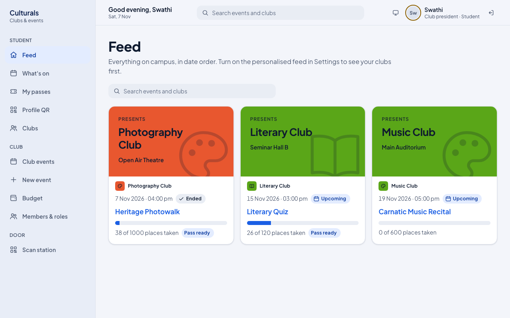
On a phone the bottom bar shows the student pages. Tap More to reach Club events and Scan station.
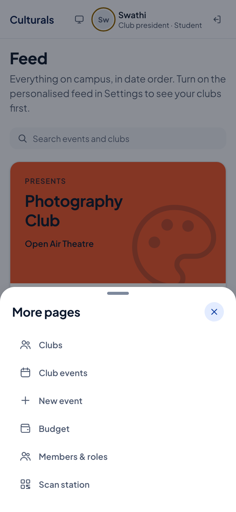
Open the scan station for your event
The station opens for your club's events once they are Published (that is, approved through the approval flow) or Live. You can get there two ways:
- From the event: Club events → open the event → Scan station (top right). If the event is still Published, the officers also see Go live; press it when doors open, so the event shows as "Live now" to everyone.
- From the menu: Scan station (on a phone: More → Scan station).
- Open Scan station.
- Under Event at this door, pick the event. Only events you are allowed to run a door for are listed, and the earliest one is picked for you, so check it every time you open the page.
- Check the line under the title: the event status, club, venue and time, and the connection chip
(Online). The short code after it (for example
station web-df53aae6) names this device; it appears in "first scanned at … at web-…" messages so you can tell which door scanned someone. - The big panel says Ready to scan. You are ready.
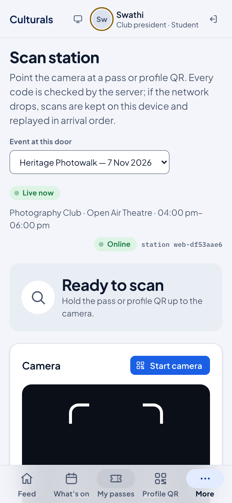
On a laptop the same page shows the live counters and the offline queue to the right.
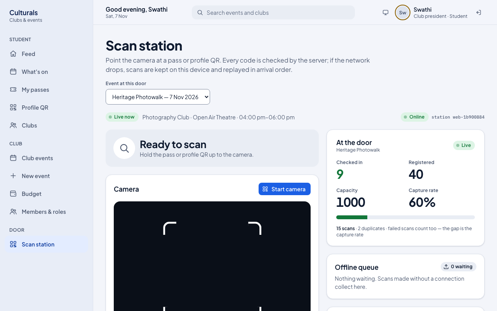
Check a student in
A student can show either:
- their event pass (from My passes), which works once, for that event only, or
- their profile QR (from Profile QR), which works at any event and also admits walk-ins.
With the camera
- Tap Start camera and allow camera access when the browser asks.
- Point the camera at the QR. It is read automatically; the same code is not counted twice while it stays in front of the lens.
- Read the verdict at the top of the page (see below), then let the student in or not.
- Tap Stop camera when you are done.
The camera works in Chrome or Edge on Android and Safari 17+ on iPhone. In other browsers the Start camera button is greyed out and a note tells you to type the code instead.
Typing or pasting a code
- Under Pass code, paste or type the code the student shows.
- Tap Check code.
No phone? Use the PRN
If the student's phone is flat or the code will not scan:
- Type the PRN from their ID card under No phone? PRN from their ID card (for example
23AR1057). - Tap Check in by PRN.
A registered student is checked in. A student who is not registered is registered at the door and checked in, as long as places are left. The verdict says Manual entry by PRN lookup.
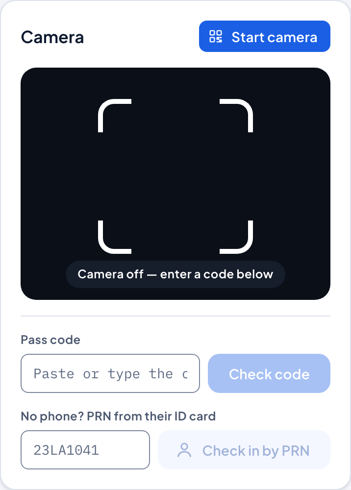
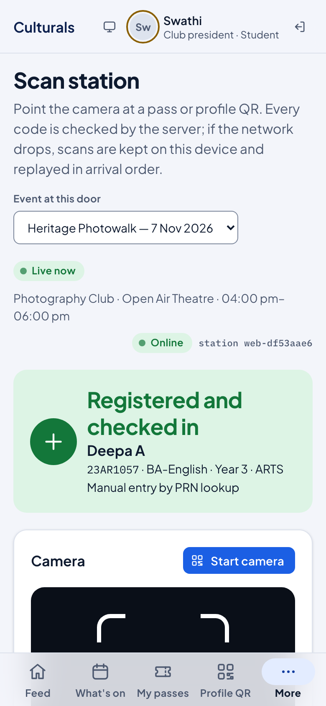
What each verdict means
The server decides every verdict; the phone only shows it. Green means let them in, amber means look closer, red means do not admit on this code. The phone also vibrates: one short buzz for green, a double buzz otherwise.
| Verdict | Colour | What happened | What to do |
|---|---|---|---|
| Checked in | green | A registered student's pass or profile QR. Name, PRN, programme and year are shown. | Let them in. |
| Registered and checked in | green | Walk-in: a profile QR or PRN of a student who was not registered. They are now registered and in. Also used when a waitlisted student turns up and a place is free. | Let them in. |
| Already checked in | amber | This person was already admitted. The message says when and at which station. | Check it is the same person; do not count them twice. |
| Wrong event | red | A pass for a different event. The message names it. | Ask for their profile QR instead; it admits them here as a walk-in if places are left. |
| Pass was replaced | red | An older copy of a pass. The student has a newer one, or cancelled this registration. | Ask them to open the current pass, or scan their profile QR. |
| Code was replaced | red | An old profile QR; the student has issued a new one. | Ask them to open Profile QR again. |
| Pass expired | red | The pass is too old to use. | Scan their profile QR instead. |
| Event at capacity | red | A walk-in or waitlisted student, but every place is taken. | They cannot be admitted. |
| Code not recognised | red | Not a Culturals code at all, or mistyped. | Re-scan or retype; otherwise use the PRN. |
| Saved offline | amber | The server could not be reached. See the next section. | Admit only if the pass looks right. |
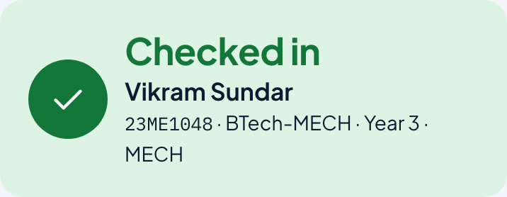
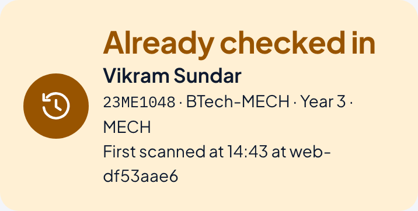
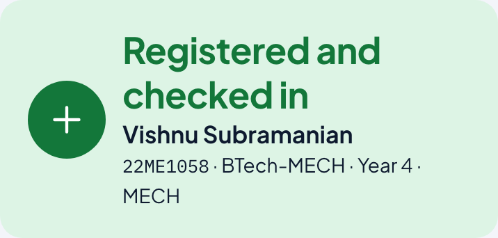
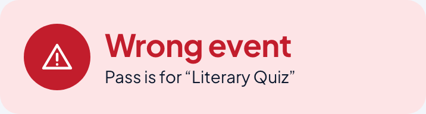
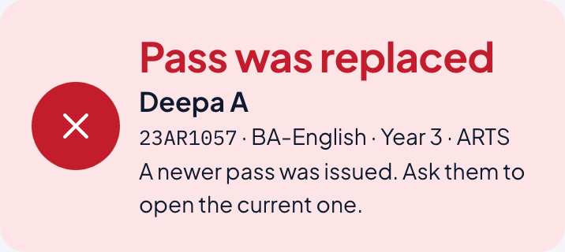
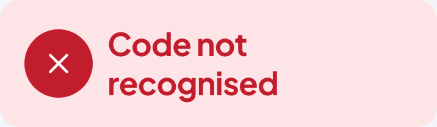
Every scan is recorded, including the red ones and every PRN lookup.
When the connection drops
If the station cannot reach the server, a scan is kept on the device instead of being lost:
- The verdict shows Saved offline: the code has not been checked yet. Let the student in only if the pass looks right (their name and the event on their phone).
- The chip at the top changes to Offline · N queued (no network at all) or Online · N to sync (network is back but the scans are still waiting).
- The Offline queue card shows how many scans are waiting.
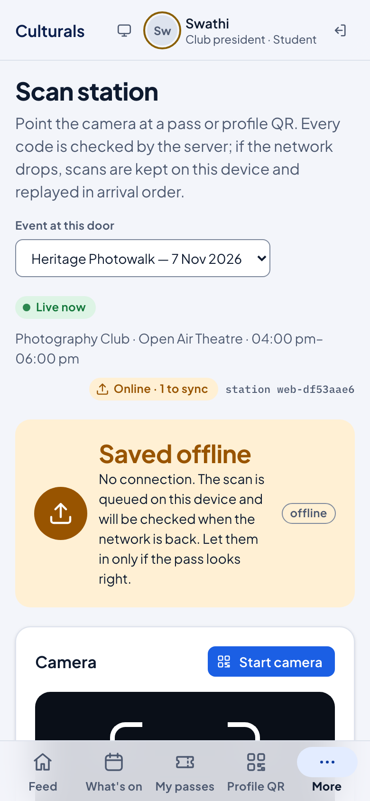
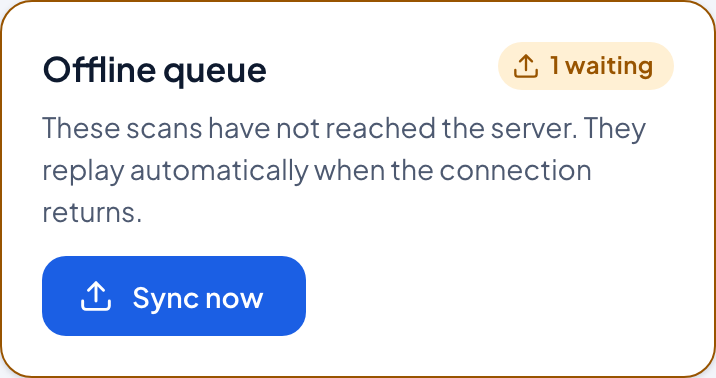
When the connection returns, the waiting scans are sent automatically. You can also tap Sync now. A message reports the result, for example "Synced 1: 0 checked in, 1 duplicate". If two stations scanned the same student while offline, the earlier scan counts and the later one becomes a duplicate.
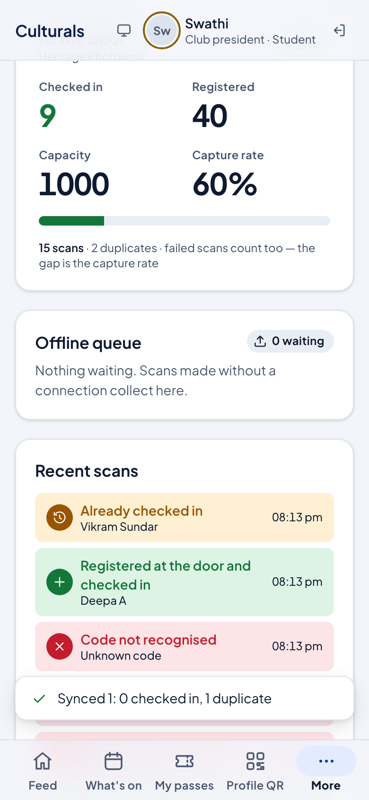
Waiting scans are stored in that browser on that device. Do not clear the browser's data or use a private window for the station, and do not sign out until the queue shows 0 waiting.
Watch the door: counters and recent scans
The At the door card updates every few seconds:
- Checked in and Registered, with a bar showing how full the room is against registrations.
- Capacity of the event.
- Capture rate: the share of all scans that admitted someone. Duplicates and red verdicts lower it. A low rate means many people needed a second try; it is a measure of how smoothly the door ran, not of turnout.
Recent scans lists the last eight scans with their verdict and time, marked "offline" if they came in through the queue. Each row also says how the student got in, for example Registered at the door and checked in for a walk-in.
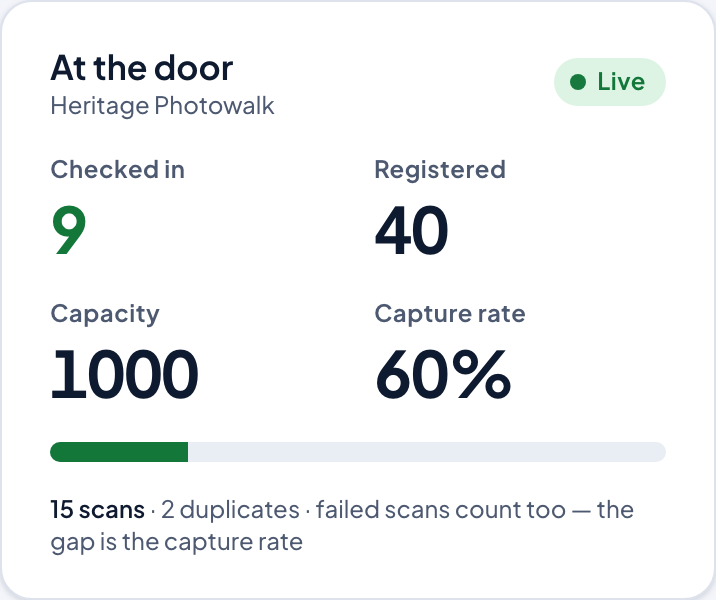
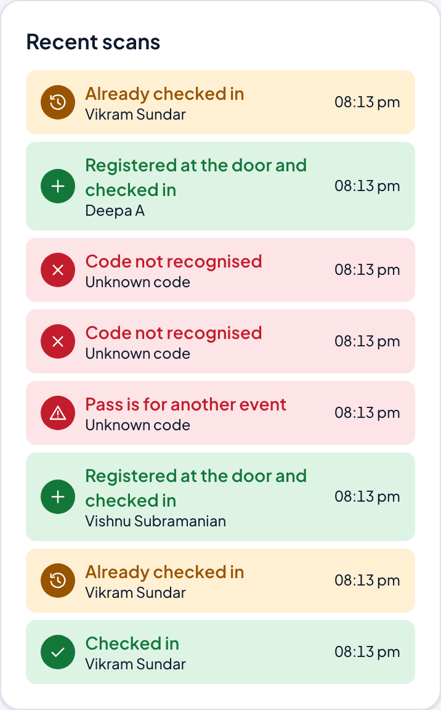
See who is in and who is not yet
The Attendees list at the bottom of the scan station shows everyone registered, with "9 of 40 checked in (23%)" style totals and a waitlist count when there is one.
- Use Find by name or PRN to look someone up.
- Use All, Checked in or Not yet to filter.
- In · time shows when a student was admitted. At the door marks a student who registered as a walk-in by profile QR. Waitlisted marks someone still in the queue for a place.
Only the event's organisers and door team (and the Dean, for oversight) see this list, because it shows names and PRNs.
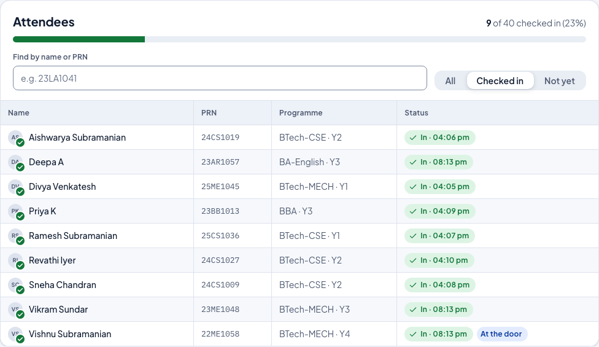
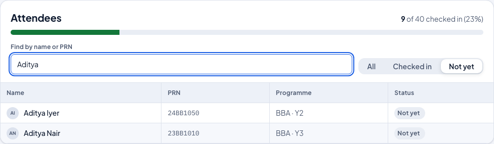
After the event: attendance on the event page
Open Club events → your event. The four figures at the top are Capacity, Expected, Registered and Attended. Attended is the number checked in at the door; it is not typed in anywhere else. Compare it with Registered to see the turnout (here 9 of 40).
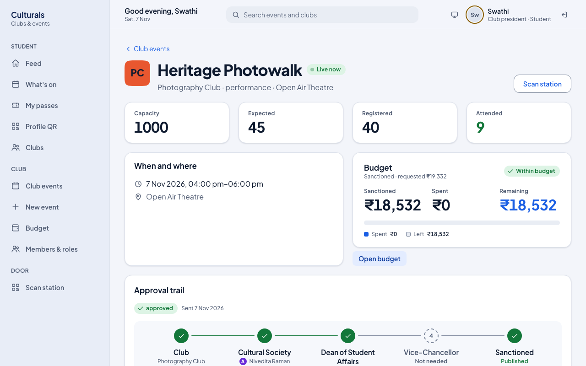
When the event is over, a president, vice-president or secretary closes it from the same page, in the Close the event panel:
- Enter Photos taken (at least 1; the event cannot be closed without photo evidence).
- Paste any Social posts links, separated by spaces.
- Press Close event. The event moves to Reported, and the attendance at that moment is what goes into the report. The treasurer then enters the actual spend (see the Treasurer guide).
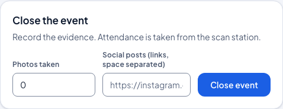
Good to know
- Who can run a door: the club's president, vice-president, secretary and core team, and named event organisers. Plain members cannot: the station shows names and PRNs.
- One device per door is enough; several doors can scan the same event at once. Each device has its own station code.
- A pass works once. A second scan is reported as Already checked in, never as a second entry.
- Walk-ins are welcome as long as places are left: scan their profile QR or type their PRN.
- Cancelled registration? The old pass stops working. Scan the student's profile QR to admit them as a walk-in.
- Re-check the event in Event at this door before you start, especially if your club has more than one event that day.
Known issues
For the maintainer; found while writing this chapter on 7 Nov 2026, rechecked on the reseeded server the same day.
- Station freezes on "Checking…" when the device itself is offline. With the browser offline
(chip shows Offline · 0 queued), pressing Check code leaves the viewfinder on "Checking…",
no Saved offline verdict appears, nothing is queued (0 waiting after 10 s), and Check code stays disabled, so the
door cannot take further scans. Cause: TanStack Query mutations default to
networkMode: 'online'and pause instead of failing, so theNETWORK_ERROR→enqueuepath inorganiser/ScanPage.tsxnever runs. The queue works only when the device thinks it is online but the API is unreachable (that is how screenshots 14–16 were produced, by blocking the scan request). Likely fix:networkMode: 'always'on the scan mutation. - Duplicate message shows server time, not local time. "First scanned at 14:43" (UTC) for a
check-in the roster shows as "In · 08:13 pm" (IST).
participation/services.py_duplicate()formats withtimezone.localtime, which is the server zone (UTC). - Cancelled registrations show "Pass was replaced". Cancelling revokes the pass, so scanning it
returns "Pass was replaced — A newer pass was issued", which is misleading; the
Registration cancelled branch in
resolve()is unreachable for a normal cancellation.